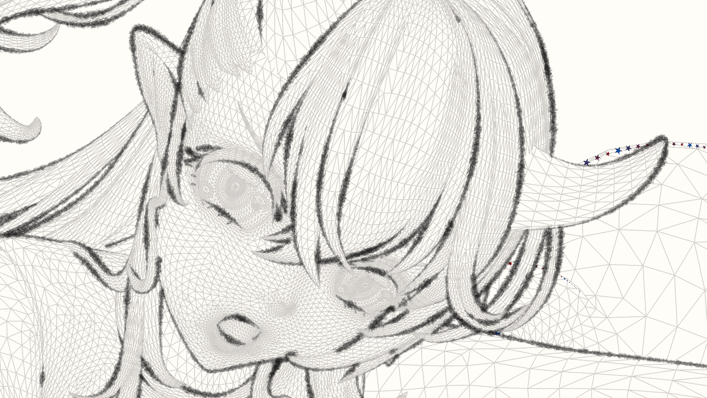
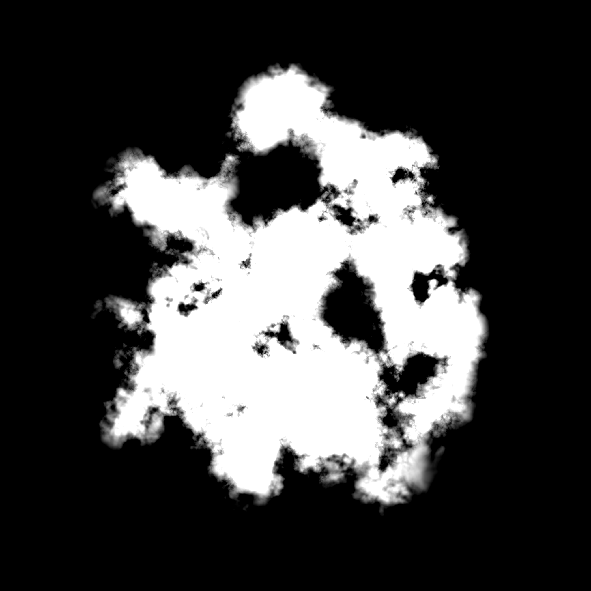
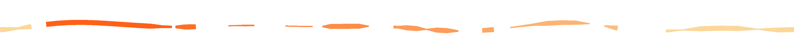

Documentation
In this page, we introduce the settings in detail to help you fully utilize StrokeGen.
Global Setting
This controls the overall behavior of StrokeGen.

The names are self-explanatory, but here are some details:
Blending Mode
The blending mode for applying the curve color to the screen. For advanced stylization, you should set it to Alpha Blend.
Paper Mode
Set this to one to only render the curves on the screen. This is useful when you want to observe the curves only, without the mesh surface.
Per-Object Setting

StrokeGen generates 3D curves from mesh surface, then resamples them into 2D curves.
Objects with different geometry characteristics(1) may require different settings.
- For example, vertex density, hard/soft surfaces
Per-Object Setting includes two parts: Curve and Mesh-related parameters.
Curve-related Parameters
This part of patrameters control the generation of 3D curves from the mesh surface.
Currently StrokeGen supports only one type of curve: Contour.
Contour is a curve that follows the silhouette of the mesh. In other words, it separates the front-facing and back-facing parts of the mesh.
Click image to view details and captions


More Curve Types
If StrokeGen got enough momentum for further development (which I really doubt...), Boundary, Intersection, Crease types will be added.
This option smooths the contour curves by locally optimizing the surface around the contour. It is useful when the contour curves are too jagged.
Your mesh should have enough vertex density to support the smoothing operation.
Determines segmentation upon the 3D feature curves. Each segment will be regarded as an individual curve. This will affect the final 2D curve network, hence the stylization, such as tapering, texturing, etc.
The segmentation schemes may differ according to the curve type. For contour curves, StrokeGen supports two types of segmentation: cusp and corner.
Cusp is where the curve self-occludes, and the tangent direction changes abruptly.
For example, the two points marked with "3" in the image below are cusps.
{kind=link}
Here are two images comparing results without any segmentation and with cusp enabled.
{kind=link}
{kind=link}
Sharp corners in the 2D space.
When this is enabled, the curves will be split at those sharp corners.
Corner Angle controls the angular threshold of the corner detection.
Without any segmentation vs. with both cusp and corner enabled with a corner angle of 60 degrees. 
{kind=link}
This parameter controls the visibility of the 3D curves. It is useful when you want to show some hidden curves that are very close to its occluder surface.
The visibility threshold is the depth offset between the 3D curve and the mesh surface. Usually a value from 0.1 - 0.3 is sufficient.

Mesh-related Parameters
This controls the GPU processing of the mesh surface for better curve generation.
StrokeGen adaptively tessellates the surface to refine the 3D curves. This is required when your base mesh is too coarse to generate smooth curves.

Higher tessellation level results in better curves but may slow down the performance.
If you mesh already had a subdiv modifier with 2 or higher levels, you should leave this value to 0.
Usually, a value of 1 is sufficient for most cases.
If the curves are still not smooth enough, you can increase this value to 2.
This option enables the crease detection algorithm, which helps to generate better curves on sharp edges. It is useful when your mesh has sharp edges that are not well supported by the vertex normals.
Better to keep this off and rely on your topology. It may generate unwanted curves on the mesh.
Sometimes we have to handle transparency or other special shading types. For now StrokeGen supports only Opaque and Transparent shading types.
Usually your strokegen object should be set to Opaque. Objects with Transparent shading type will not occlude any curves.
Per-Material Setting

This controls how the 2D curves were drawn, including the line width, color, and other visual effects.
Use an extra material solely for StrokeGen renderer and nothing else.
There are two ways to render a 2D curve: Stamp and Vector.
- Stamp: walk along the input trajectory and place stamps of a brush footprint.
- Vector: generate a stroke mesh from the curve spline, then fill the stroke with color/texture.
Parameters
The color of the 2D curve.
Always remember to initialize the alpha to 1.
The width of the 2D curve.
This option enables the texture mapping on the 2D curve. Once enabled, different options will be available for stamping and vector styles.
The texture used for stamping brushes on the curve, or texturing the strokes.
Note that the empty portion of the texture should have an alpha of 0.
Brush Tiling: The tiling of the brush texture.
- For Stamping style, it is the tiling of the brush footprint. Usually you should set this value to 1. 
- For Vector style, it is the tiling of the texture on the stroke. An image of aspect ratio 4 : 1, with 4 elements, should have a tiling of 4. An image of aspect ratio 8 : 1, should have a tiling of 8. 
{kind=link}
{kind=link}
{kind=link}

If you've ever made custom brushes in Photoshop, you know what jittering is. It adds randomness to the brush footprint, making the curve more natural.
StrokeGen supports jittering for stamped brushes. You can jitter the brush footprint in many ways: Scale, Position, Rotation, etc.
 The texture to simulate the micro height variations on the paper surface. Stamped Brush only.
The texture to simulate the micro height variations on the paper surface. Stamped Brush only.
For example, the left paper texture is a fractal noise generated in Substance Designer.
Paper Tiling: The tiling of the paper texture. Usually you should set this value to 1. However, you can increase it if your texture does not have enough high-frequency details.